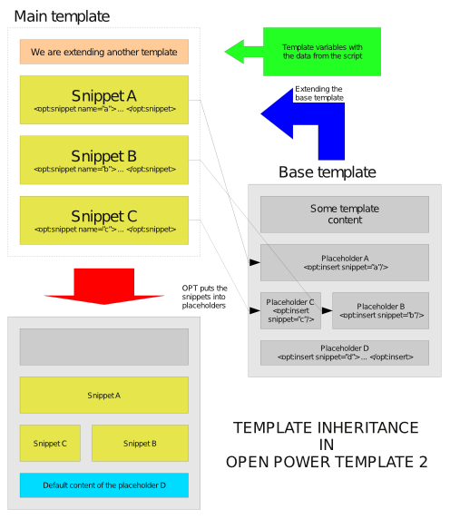

- 4. Programmer's Guide
4.7. Template inheritance - 4.6.2. Formats and expressions
« Previous - 4.8. Custom escaping functions
Next »
4.7. Template inheritance
Template inheritance is another way of modularizing your templates - composing the output document from several template files. It is very similar to the concepts that can be found in the object-oriented programming. In this chapter we are going to describe the implementation of template inheritance in Open Power Template.
Short introduction to snippets
One of the advantages of the new templating language is the fact that it may allow the manipulations impossible in pure PHP. One of such manipulations is described right here. It is the fundamental feature of the template inheritance, and moreover, it is widely used in many other places. As you should remember, the template processing in OPT consists of two phases:
- The compilation of the template to PHP.
- The execution of the compiled PHP code.
The first phase is performed only when the template has been modified. Because of the performance reasons, in any other cases, OPT just executes the previously compiled template. So far, we have met the features that are active during the execution: the expressions, sections, etc. - all of them process the data from the script and generate the output HTML code. On the other hand, snippets work during the compilation. They work much like macros - they capture a piece of the template code and allow to paste it in several other places. To see, how they work, consider the following template:
<?xml version="1.0" ?> <opt:root> <opt:snippet name="foo"> <p>The value of the variable is {@variable}</p> </opt:snippet> {@variable is 5} <opt:insert snippet="foo" /> {@variable is 10} <opt:insert snippet="foo" /> </opt:root>
The result produced by the template is:
<p>The value of the variable is 5</p>
<p>The value of the variable is 10</p>
The code captured by the snippet still remains dynamic. Inserted in different places, it could produce different results, depending on the actual variable values etc. Furthermore, it is even more smart. In some cases, it is able to self-modify to provide a better integration with a particular context. It is especially visible with the sections:
<?xml version="1.0" ?> <opt:root> <opt:snippet name="user"> <div> <p>Nick: {$user.nick}</p> <p>Age: {$user.age}</p> </div> </opt:snippet> <opt:section name="members" opt:use="user" /> <opt:section name="admins" opt:use="user" /> </opt:root>
Let's unroll the actual code to see, what goes to the execution stage:
<?xml version="1.0" ?> <opt:root> <opt:section name="members"> <div> <p>Nick: {$members.nick}</p> <p>Age: {$members.age}</p> </div> </opt:section> <opt:section name="admins"> <div> <p>Nick: {$admins.nick}</p> <p>Age: {$admins.age}</p> </div> </opt:section> </opt:root>
The variable $user (the same, as the snippet name) has been automatically replaced with the section names, which simplifies the reuse of the section content. For example, if we have a pagination system built with opt:selector, we do not have to copy and paste the pagination layout into every template that uses it. We could simply define a snippet in an extra template, include this template and load the snippet content to the opt:selector instruction, like in the example above.
The snippets require different inclusion techniques than
opt:include. They will be explained soon.
General overview
Template inheritance resembles the ordinary inheritance from the object-oriented programming. The classes are represented by templates, and the methods - by snippets. We may extend one template with another and overwrite the snippets it defines or add some new ones. The only difference is the base template which specifies, where the snippets should be placed and displayed. Below, we can see an image that illustrates the process:

The base template may define the base XHTML code structure, with the <html>, <body> tags etc. Moreover, it leaves some spare placeholders (with opt:insert). Then, we extend the template with another one which provides the snippets for the placeholders. As a result, OPT generates the complete output document, where the snippets are inserted into placeholders, overwriting the default content.
A single base template can be extended by many different templates that could contain the code for different website modules: news, articles, etc. Furthermore, if the module A is based on B, it may extend the templates of the module B and overwrite snippets defined by them. OPT automatically manages the compilation issues.
The template inheritance system in OPT has the following properties:
- Contrary to many other template engines, the inheritance is processed during the compilation time. The inherited template name cannot be read from a variable or any other expression.
- As the snippets are reusable, you may create some generic snippets and help yourself in various situations.
- Dynamic inheritance is still possible, but in a bit different way.
A sample code
Let's create some sample templates that use the inheritance:
The base template (base.tpl):
<?xml version="1.0" ?> <opt:root> <opt:prolog /> <opt:dtd template="xhtml10transitional" /> <html> <head> <title>Hello!</title> </head> <body> <h1>Title</h1> <opt:insert snippet="content"> <p>Some default content here.</p> </opt:insert> </body> </html> </opt:root>
The extending template (extending.tpl):
<?xml version="1.0" ?> <opt:extend file="base.tpl"> <opt:snippet name="content"> <p>Hi universe!</p> </opt:snippet> </opt:extend>
The PHP code that runs the template:
$view = new Opt_View('extending.tpl'); $output = new Opt_Output_Http(); $output->render($view);
As we run the code, we should get the following result:
<?xml version="1.0" ?>
<!DOCTYPE html PUBLIC "-//W3C//DTD XHTML 1.0 Transitional//EN" "http://www.w3.org/TR/xhtml1/DTD/xhtml1-transitional.dtd">
<html>
<head>
<title>Hello!</title>
</head>
<body>
<h1>Title</h1>
<p>Hi universe!</p>
</body>
</html>
In the PHP code, we call only the template on the top of the inheritance chain, or in other words - the template that we do not want to extend anymore. From the script-side, we do not have to know about the existence of the base template. The whole inheritance chain is executed in the content of a single view, so all the templates share the same data and see their template variables. The template inheritance increases the performance, compared to the same code achieved with an ordinary opt:include instruction. We have less objects and the template engine does not have to perform so many disk operations to detect whether the files need to be recompiled.
Try to modify the base template. Although we do not mention it in the script, OPT knows that it exists and the change is visible automatically, because the library checks also for the modifications of the dependent templates.
In both
opt:rootandopt:extendyou may set theescapingattribute which defines the default escaping policy for a single template. The snippets always remember the policy of their "mother" template and restore it even after the insertion.
Dynamic inheritance with branches
Let's take a look at the examples above once more. We can say about them that they form a chain, because OPT loads them one after another. However, in some templates, the chain may split into several different chains called branches. Using the hints from the script, the compiler decides which chain to follow. This leads us to the dynamic template inheritance where the script decides, what templates to extend. Let's try to create a simple message template:
<?xml version="1.0" ?> <opt:extend file="overall.tpl" simple="simple.tpl"> <opt:snippet name="content"> <h1>Message</h1> <p>{$message}</p> <p class="bar"><a parse:href="$link">OK</a></p> </opt:snippet> </opt:extend>
In the opt:extend tag, we have two branches:
file- it redirects us to theoverall.tpltemplate. In our example, it may contain a full version of the website layout.simple- redirects tosimple.tpl. It may contain a simplified version of the website layout.
By default, OPT follows the file branch, and to select the simple branch, we have to inform OPT in the PHP code about this:
$view = new Opt_View('message.tpl'); $view->setBranch('simple');
Your PHP code may switch the branch at any time and you do not have to pay attention to the template compilation.
In more complex chains, OPT always tries to follow the selected branch. If it is not defined in a particular template, OPT follows the default file branch as an exception.
True dynamic inheritance
Branches, yet interesting, do not offer a true dynamic template inheritance, as the script cannot select the template names to extend directly. Fortunately, such system is also present in OPT 2. The template part is very simple - we just need to inform that OPT may expect a dynamically selected file in the template:
<?xml version="1.0" ?> <opt:extend file="default.tpl" dynamic="yes"> <!-- ... --> </opt:extend>
In the script, we need to use the inherit() method:
$view->inherit('extending.tpl', 'extended.tpl');
If we want to extend the main view template, we may use the shortened form:
$view->inherit('extended.tpl');
The complex chains are also possible:
$view = new Opt-View('template1.tpl'); $view->inherit('template2.tpl'); $view->inherit('template2.tpl', 'template3.tpl'); $view->inherit('template3.tpl', 'template4.tpl');
Although you do not have to pay attention to the template compilation, please be aware that all the chains your script is able to produce do need to be compiled which is a quite demanding process and may slow down your website, if it will be taking place too often.
Template inheritance versus template inclusion
The techniques work on different template processing stages. Template inheritance takes place during the compilation and thus it produces a faster and more compact final code. On the other hand, opt:include can be configured on-the-fly directly by the template and use the template variables.
Let's consider a situation, where the script can execute more than one action at once. The actions want to display their own templates. With the template inheritance, it is impossible to create a true loop that would display the action templates in the same snippet. You would have to use the dynamic inheritance and complex control flows. Furthermore, the actions would need to share the same variable scope, as the inheritance works inside a single view. The same limitations do not occur in opt:include. The actions may simply create their own views and pack them into a section:
<opt:section name="contentViews"> <opt:include from="contentViews" /> </opt:section>
Note that you can combine the template inheritance and inclusion in one project, depending on the current needs of the particular templates.
Conclusion
Open Power Template provides an advanced template inheritance system. This chapter does not cover all of its features, but rather gives you an idea, how it works and what can be done with it.
See also:
- 4.7. Template inheritance
4. Programmer's Guide - « Previous
4.6.2. Formats and expressions - Next »
4.8. Custom escaping functions